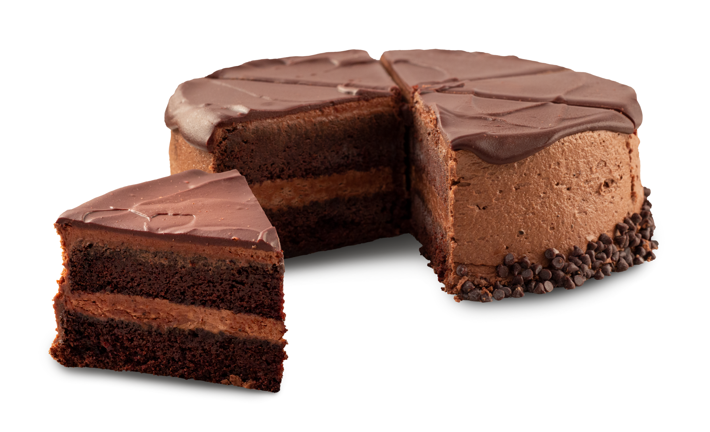

Back Home
All-purpose flour
Granulated sugar
Unsweetened cocoa powder
Espresso powder
Canola oil
Sour cream
Whole milk
Vanilla Extract
Mini chocolate chips
Line two 6” round cake pans with parchment paper and grease well, then set them aside. I like to line them by tracing the bottom of the cake pans onto parchment paper and then drawing “handles” out of opposite sides. This makes it very easy to lift the cake out after baking.
In a medium bowl, combine flour, sugar, cocoa powder, baking soda, baking powder, sea salt and espresso powder. Set aside to use later. This step is important to ensure the ingredients are evenly distributed and that there are no lumps.
Next, combine the wet ingredients. In a large bowl, whisk together canola oil, eggs, sour cream, milk and vanilla until the mixture is smooth.
Once the wet ingredients are combined, add the dry ingredients and stir until the batter is smooth.
Stir in the mini chocolate chip until evenly distributed.
Next, divide the batter evenly into the two prepared cake pans. You can either eyeball it or actually measure.
Bake in the preheated oven for 30-35 minutes, or until a toothpick inserted in the center of the cakes comes out clean or with a few crumbs.
Place cake pans on a wire cooling rack to cool to room temperature (takes about 30 minutes). Once cool, lift cakes out of the pans and remove parchment paper. Let cool completely on the wire cooling rack.
Once the cakes are completely cooled, frost or decorate them any way you wish. I either use this chocolate frosting or this vanilla frosting to make our chocolate birthday cakes! Don’t forget to do a crumb coat first – a thin base layer of frosting to keep crumbs from getting into your final design.